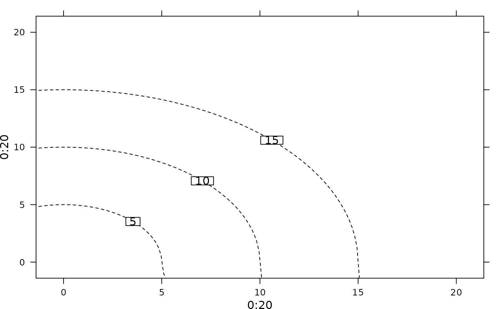

Panel function for drawing lines as part of a circle centred in (0, 0) into a trellis graphic (lattice
package).
Usage
adeg.panel.join(drawLines, params = list())
Arguments
- drawLines
a vector containing the level values used as radius of the circle
- params
graphical parameters : plabels and add.line (lattice)
Value
Displays level lines and their values.
Note
For more information about the use of panel functions, please see the lattice package developed by Deepayan Sarkar.
Examples
if(require(lattice, quietly = TRUE)) {
xyplot(0:20 ~ 0:20, drawLines = c(5, 10, 15), params = list(plabels.cex = 2),
panel = function(drawLines, params){
adeg.panel.join(drawLines = drawLines, params = params)})
}
